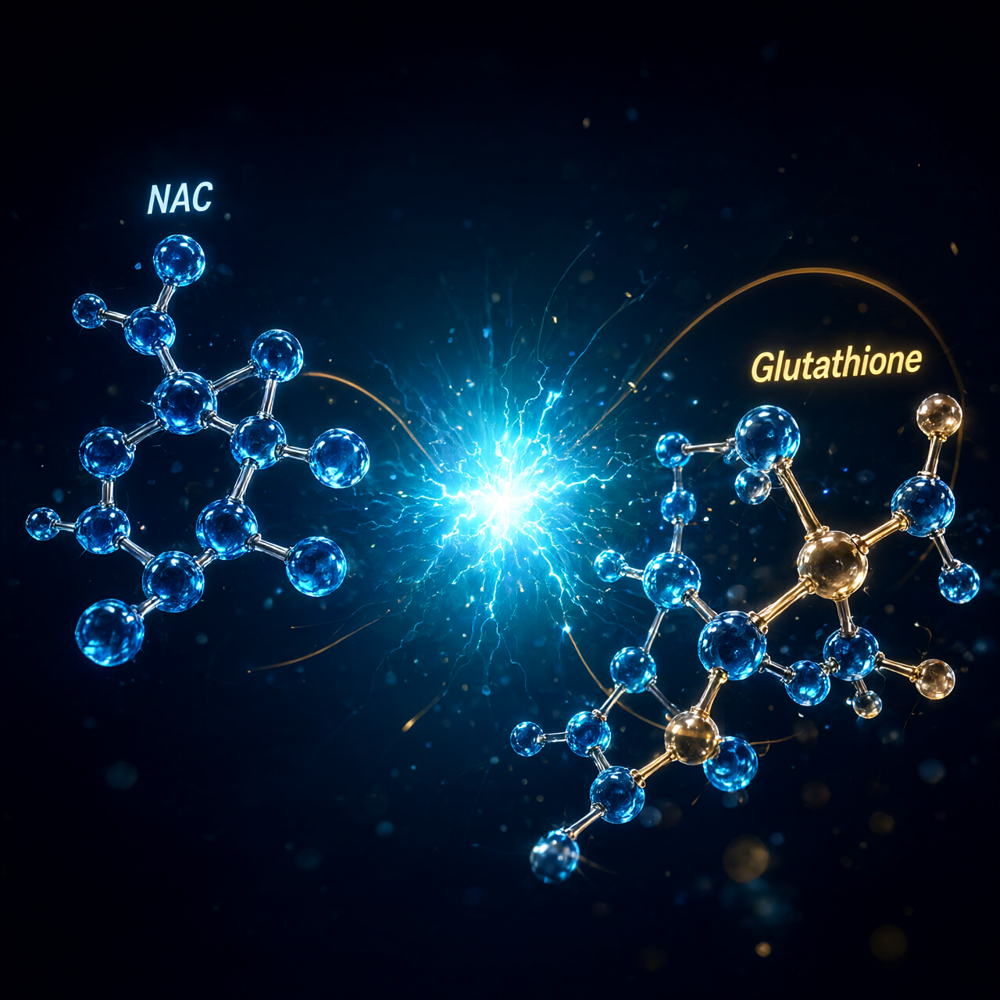

Nac

THE MECHANICS
N-Acetylcysteine functions as a precise precursor to glutathione, entering cellular pathways to boost the body's primary antioxidant defense system without triggering excessive oxidative stress. This compound acts as a direct supplier of cysteine, the rate-limiting amino acid required for the synthesis of reduced glutathione, thereby addressing the bottleneck in endogenous production. The acetyl group attached to the nitrogen atom enhances oral bioavailability and stability, allowing for more consistent plasma levels compared to raw L-cysteine supplementation. Once inside the cell, it participates in transsulfuration pathways, supporting both detoxification processes and redox balance through direct chemical interaction with reactive oxygen species.
The mechanism extends beyond simple antioxidant support into the modulation of glutamatergic signaling, specifically by influencing presynaptic glutamate release and uptake. This dual action helps maintain synaptic homeostasis, preventing the excitotoxicity that often accompanies chronic oxidative stress and neuroinflammation. By stabilizing the extracellular glutamate environment, NAC reduces neuronal hyperexcitability while simultaneously providing the structural components needed for cellular repair. This makes it a unique agent that bridges metabolic support with neural regulation, offering a more comprehensive approach to cellular resilience than standard antioxidants alone.
BIOLOGICAL LEVERAGE
The biological impact of NAC is most pronounced in its ability to restore redox balance in tissues under high metabolic demand or chronic inflammatory states. It supports mitochondrial function by protecting electron transport chain components from oxidative damage, which helps sustain ATP production efficiency during periods of physiological stress. This preservation of mitochondrial integrity translates into better energy metabolism and reduced fatigue at the cellular level, particularly in organs with high oxygen consumption such as the liver and brain. The compound also plays a role in modulating inflammatory cytokines, reducing the systemic load of pro-inflammatory markers without suppressing necessary immune responses.
Furthermore, NAC contributes to mucosal health by thinning mucus viscosity through the disruption of disulfide bonds in mucoproteins, improving clearance efficiency in the respiratory tract. This physical property complements its chemical antioxidant effects, making it effective for conditions characterized by both oxidative damage and viscous secretions. The compound also supports liver detoxification pathways by conjugating with toxins and heavy metals, facilitating their excretion via bile and urine. These combined actions create a synergistic effect where structural support and chemical protection reinforce each other, leading to improved tissue function and recovery rates.
TACTICAL IMPLEMENTATION
Clinical protocols typically utilize doses ranging from 600 to 1800 milligrams per day, divided into two or three administrations to maintain steady plasma concentrations throughout the waking hours. Morning dosing is often preferred to align with circadian rhythms and maximize antioxidant coverage during peak metabolic activity, while evening doses may support overnight repair processes. The compound is best absorbed on an empty stomach, as dietary proteins can compete for transport mechanisms, though tolerance allows for flexibility with meals in sensitive individuals. Consistency in daily intake appears more critical than acute high-dose bursts for achieving sustained modulation of glutathione levels and glutamate balance.
Stacking NAC with alpha-lipoic acid or selenium can enhance its antioxidant efficacy through recycling mechanisms and cofactor support, creating a more robust defense network. For those targeting specific respiratory or hepatic concerns, combining it with N-acetyl-L-tyrosine may further optimize neurotransmitter precursor availability. Monitoring for mild gastrointestinal comfort is advisable initially, as some users report slight buffering issues that often resolve with time or adjusted timing relative to meals. Regular evaluation of personal tolerance and response indicators helps fine-tune the individual protocol, ensuring that supplementation remains aligned with specific physiological goals rather than generic optimization trends.
Do your own research. Don't be a statistic.
Prostar Life Hack
Always verify protocol biological leverage with baseline biometric tracking. Data is sovereignty.
[ AUTHOR: LEAD TECHNICAL RESEARCHER ]